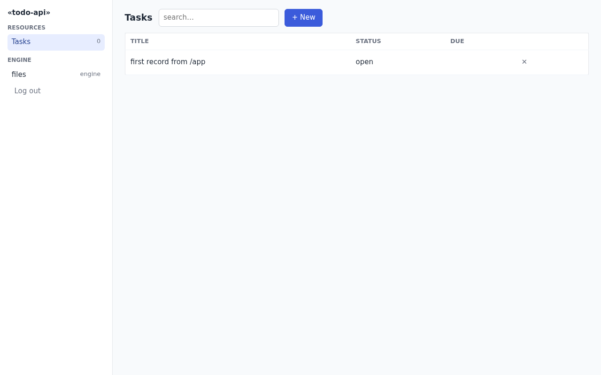
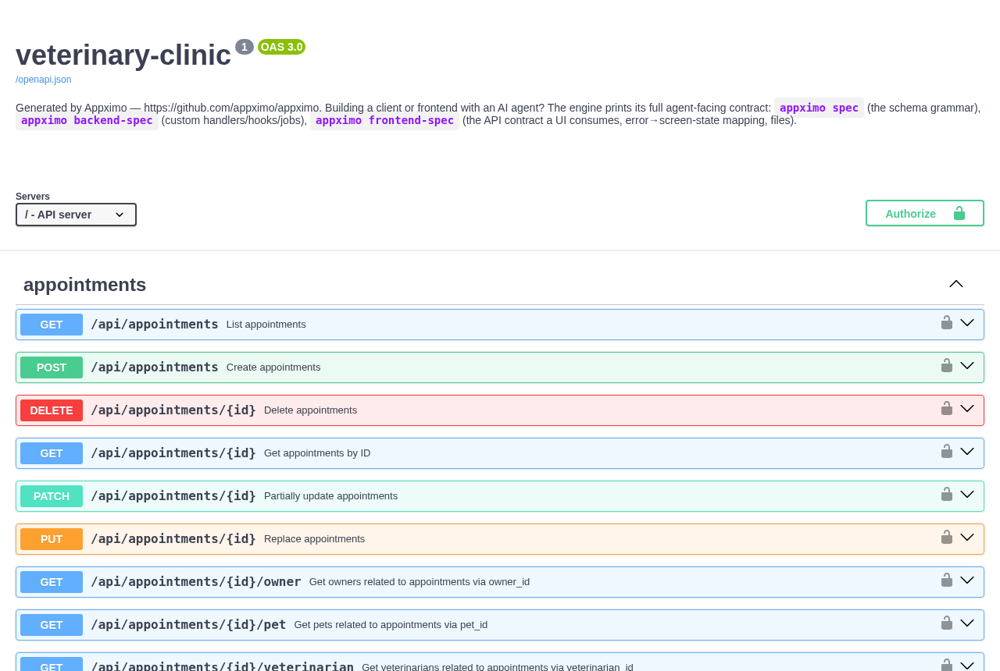
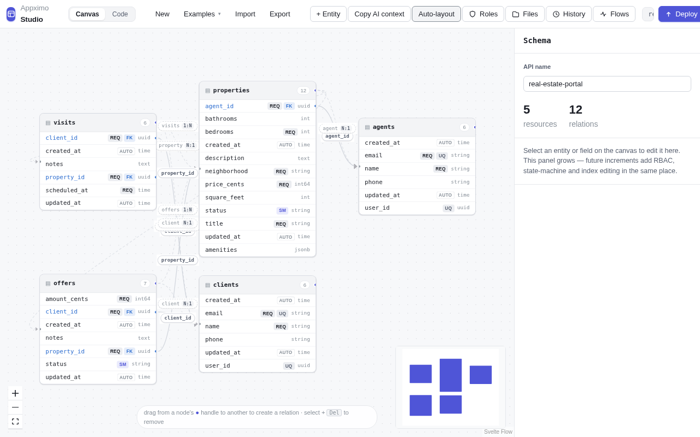
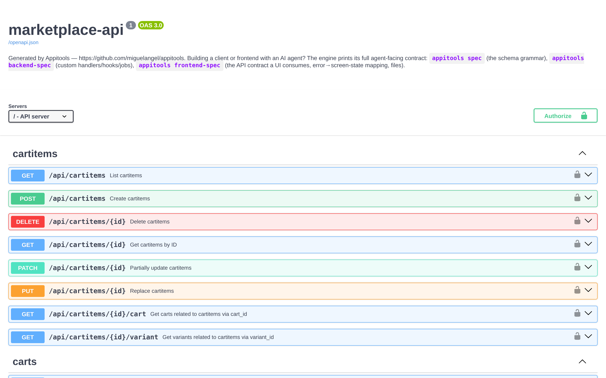
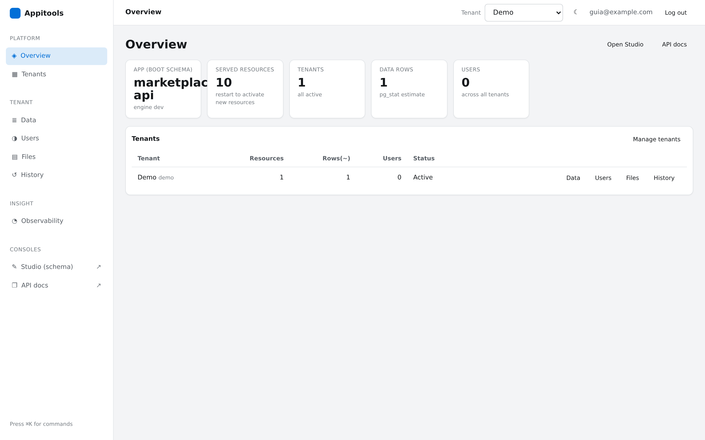
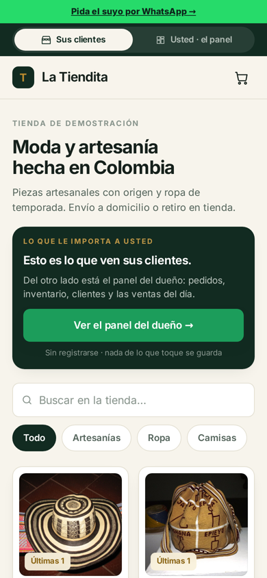
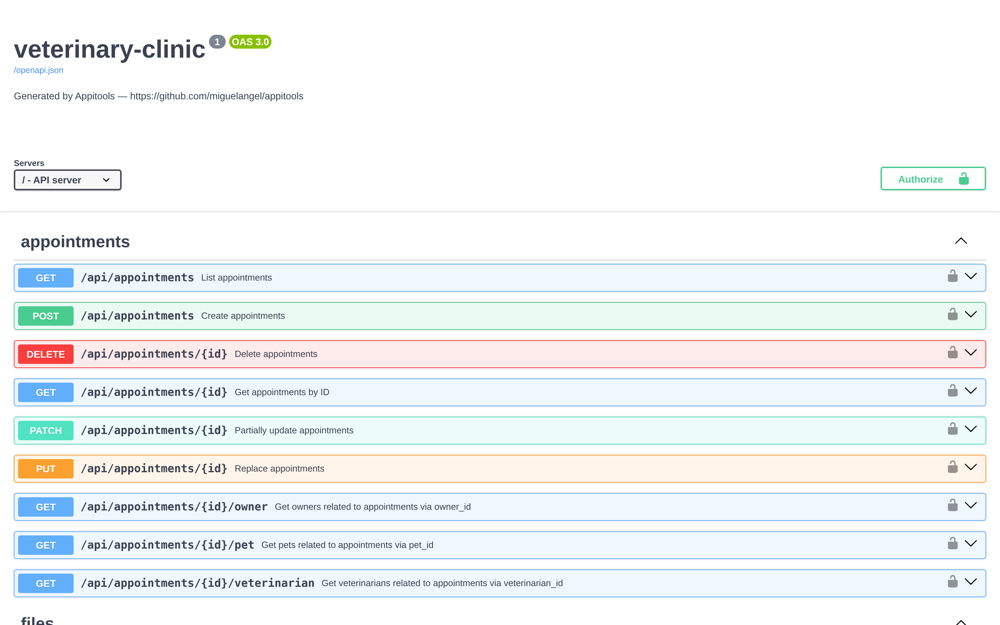
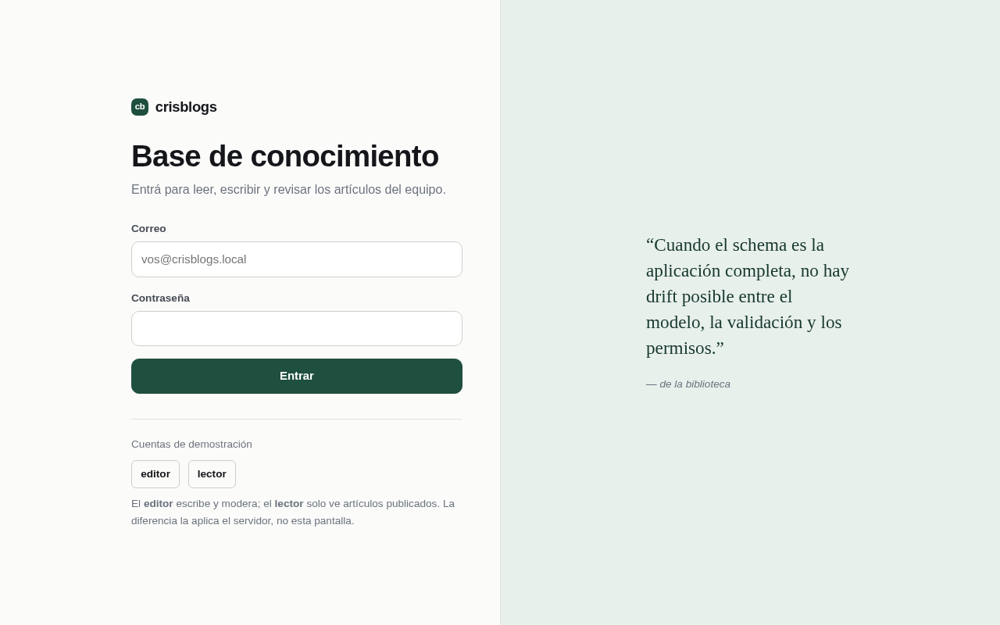

Appximo compiles a JSON schema into a complete multi-tenant backend — REST + GraphQL + interactive docs + admin panel + a generated back-office — as one static Go binary on a PostgreSQL you control. The prompt below takes your agent (Claude Code, Cursor, Copilot…) from an idea in one sentence to a running app, and to a real domain with HTTPS when you say so.
You are going to build me a complete, working application on **Appximo** — an
engine that compiles a JSON schema into a multi-tenant REST + GraphQL +
OpenAPI server with an embedded admin panel (`/admin`), visual schema editor
(`/editor`), generated back-office (`/app`) and interactive docs (`/docs`).
One static binary + PostgreSQL. You will take it from my idea to a running
app, and — if I ask for it — to production on a real domain with HTTPS.
MY IDEA: <describe the app in one or two sentences>
## Rules of engagement (read first, they override your habits)
- Ask me ONLY the question block below, all questions together, before doing
anything. After I answer, make every remaining decision yourself with
sensible defaults and **do not ask me anything else** — if something fails,
read the error (Appximo errors name the problem and the way out) and fix it.
- A step is DONE when its checklist item passes, not when a command exits 0.
Verify each item with a real request and show me the evidence.
- The engine prints its own contracts — when you need exact syntax, run the
matching command instead of guessing, and **never invent API surface**:
- `appximo spec` — the schema grammar (types, relations, state machines, RBAC)
- `appximo backend-spec` — custom Go handlers, hooks, background jobs
- `appximo frontend-spec` — the API contract a UI consumes (auth, filters,
pagination, uploads, error→screen map)
- `appximo backoffice-spec` — a CRUD admin UI generated from /openapi.json
- `appximo quickstart` — OPERATING it: tenants, users, migrate, production
- Never serve any part of this app from a second server or port: the engine
serves API, frontend, admin and docs from ONE binary, same origin. If you
are tempted to run `npx serve`, `python -m http.server` or a Node server
next to it, you took a wrong turn — go to "Custom screens" below.
- Never write to the database with raw SQL. Schema changes go through
`appximo validate` → `appximo migrate` (Act 2 §3); data changes go through
the API.
## Question block — the ONLY questions, asked together, then silence
1. **Postgres**: do you have a connection string I should use, or may I start
PostgreSQL 16 in Docker locally?
2. **Production**: do you want this on the internet with HTTPS now? If YES,
give me: (a) the domain (and confirm you can edit its DNS records),
(b) SSH access to an Ubuntu VPS (`user@host`), and (c) whether anything
else already runs on that box. If NO, I stop after Act 1 and print what
production will take when you're ready.
# ACT 1 — from the idea to a running app, locally
1. **Install the engine if missing** (`appximo version` first — if it prints
a version, skip this): download the binary for this platform from
https://github.com/appximo/appximo/releases/latest, verify its checksum
against the release's `checksums.txt`, `chmod +x`, move it onto the PATH.
2. **Write the schema from MY IDEA**:
- `appximo spec > /tmp/appximo-spec.md`, read it, then write `schema.json`
using ONLY that grammar.
- Correction loop: `appximo validate --json schema.json`, fix every entry
it reports, repeat until `"valid": true` **and `warnings` is empty**.
Warnings are real bugs waiting to happen — two you will likely hit:
a `required` string field also needs `"minLength": 1` (an empty string
satisfies `required`), and a role that writes a resource with a `file`
field also needs a grant on the `files` resource (or uploads 403).
- If any part of the app must be readable WITHOUT login (a public catalog,
published posts, a landing's data), declare it in the schema's
`rbac.public` block (it's in the grammar) — do not invent an "anonymous"
role and do not proxy around auth.
3. **Boot everything with ONE command**:
`appximo up --name <shortname> --schema schema.json --yes --json`
- stdout is one JSON object: every URL, one-time admin credentials, a dev
API token, and a smoke-test result. Save the credentials for me.
- The name must match `^[a-z][a-z0-9]{1,29}$` (no hyphens/underscores).
- The printed token and the first user carry the **most privileged role
your schema declares** (`token_role` in the JSON). To act as any OTHER
role — to prove a restricted role really is restricted — mint one:
`appximo token --secret "$JWT_SECRET" --tenant <name> --role <role> --schema schema.json`
(the secret is in the `.env` `up` wrote).
- Re-running `up` after editing schema.json is safe: it migrates the
tenant to the new schema (destructive drops stay gated and print the
exact approval command).
4. **Prove it with real requests.** The tenant is addressed by Host header:
use the printed `http://<name>.localhost:<port>` URLs, or add
`-H 'Host: <name>.localhost'`. Filters need `curl -g`.
**ACT 1 CHECKLIST** — verify each, then show me the table with evidence:
- [ ] `appximo validate schema.json` → valid, zero warnings
- [ ] `GET /docs` → 200
- [ ] `POST /api/<main resource>` with a token whose role may write it → 201
(the printed token, or one minted for the right role — see step 3)
- [ ] The filtered list (`?filter[...]`) returns the record just created
- [ ] If the schema declares `rbac.public`: the public resource reads with NO
token (200) and a non-public one does not (401/403)
- [ ] `GET /app` → 200 (the generated back-office; sign-in works with the
printed credentials at the `<name>.localhost` URL)
- [ ] `appximo explain schema.json` reads back as MY IDEA — paste its output
for me so I can confirm the rules are what I meant
Then STOP and show me: the URLs, the one-time credentials, one curl that
already works, and the explain output. **Call out every place you extended
my idea** (a state, a field, a role I never named) in one short list, so I
can confirm or reject it before it reaches production. If I asked for
production, continue.
## Custom screens or endpoints (only if MY IDEA needs them)
- **Your own frontend** (brand, screens): build a STATIC SPA (no SSR) and
serve it from the same binary — two ways, pick one, never a second server:
- No Go toolchain: `appximo serve --schema schema.json --static ./dist --spa`
- Go route (one binary containing everything): `appximo init <name>` emits a
compilable project (main.go + go:embed) on `go get github.com/appximo/appximo`.
The UI's exact API contract is `appximo frontend-spec` — read it before
writing fetch calls (tenant Host, 422 shape, keyset pagination, uploads).
- **Custom endpoints** (checkout, signed webhooks, reports): read
`appximo backend-spec`; handlers run in-process with `Ctx` (validation +
RBAC + transaction included). Grant the route to roles with the RBAC
`routes` block — and know that the plain `appximo` binary refuses a schema
granting routes nothing registers: that schema belongs to YOUR binary.
# ACT 2 — production with HTTPS (only if I said yes)
0. **DNS first** (propagation takes time — start it before touching the VPS):
an A record `<app>.<domain>` → the VPS IP, and a wildcard
`*.<app>.<domain>` → same IP if tenants get their own subdomains. The
tenant id must EQUAL the first DNS label it is served at.
1. **Put the binary on the VPS**: `scp` the SAME binary you ran locally (or
your custom one from "Custom screens") to the VPS, plus your
`schema.json` — any file transfer works, `scp` is just the usual one.
Then fetch the installer AND its companion scripts into the same
directory on the VPS (the installer only installs the companions it finds
NEXT TO ITSELF — fetched alone, backups and updates have no script):
```
base=https://raw.githubusercontent.com/appximo/appximo/main/scripts
curl -fsSLO $base/install.sh -O $base/backup.sh -O $base/deploy-update.sh
```
2. **Install** (as root). One script covers both box states:
- Empty box:
`sudo bash install.sh --domain=<app>.<domain> --email=<your email> --binary=./appximo --schema=schema.json --harden --yes`
- Box that ALREADY runs something (or a second Appximo app): add
`--app=<name>` — everything (service, user, config dir, db, ports) is
namespaced under that name next to what's there, untouched. If ports
8090/9090 are taken, add `--port`/`--control-port`.
- Custom binary from Act 1's Go route: pass it as `--binary=` and add
`--cli=./appximo` (the stock engine as ops companion — your binary
serves, the CLI operates: migrate, token, backup).
- It installs native PostgreSQL, a systemd unit, and Caddy with automatic
Let's Encrypt. It prints every name it created and where config lives
(`/etc/<name>/<name>.env`). Read the summary; don't re-derive paths.
- **It is idempotent**: if it stops with a named error, fix exactly what
it named and run the SAME command again — it detects and reuses
everything it already created. Never start over by hand.
- If the certificate never issues, it is almost always DNS not yet
pointing here or port 80 blocked — `dig +short <app>.<domain>` must
return this box's IP, and `journalctl -u caddy -f` says the rest. Wait
for DNS rather than working around TLS; **never** verify with `-k`.
3. **First production tenant + admin** (on the VPS — the control plane is
localhost-only by design, never exposed):
- Register the tenant WITH the schema in the body:
`curl -s -X POST http://localhost:<control-port>/tenants -H "X-Admin-Key: $ADMIN_KEY" -H 'Content-Type: application/json' -d "{\"tenant_id\":\"<app>\",\"display_name\":\"<App>\",\"schema\":$(cat schema.json)}"`
(ADMIN_KEY and the control port are in `/etc/<name>/<name>.env`.)
- First admin: open `https://<app>.<domain>/admin` — the login screen
offers "Create the first admin" (paste the ADMIN_KEY) — or run
`appximo admin create --email … --password …` on the VPS.
- Mint a token and create one real record over HTTPS.
4. **Every future schema change** (now and forever): edit schema.json →
`appximo validate` → `appximo migrate --tenant <app> --schema schema.json --dry-run`
→ run it again without `--dry-run` to apply. New fields go live hot; a new
resource needs a service restart (`systemctl restart <service>` after
updating the schema file the unit points at). Keep the deployed schema and
the tenant record in sync by ALWAYS going through `migrate`.
**ACT 2 CHECKLIST** — verify each, then show me the table with evidence:
- [ ] `curl https://<app>.<domain>/health` (NO `-k`) → 200 `{"status":"ok",…}`
— real certificate, valid chain
- [ ] `POST /api/<main resource>` over HTTPS with a fresh token → 201
- [ ] `https://<app>.<domain>/app` → 200 and lists that record after sign-in;
`/docs` → 200
- [ ] `systemctl is-active <service>` → active, and
`systemctl is-enabled <service>` → enabled (survives reboot)
- [ ] `journalctl -u <service> -n 50` shows a clean boot (no errors)
- [ ] Backups work: run `/opt/<name>/scripts/backup.sh --env-file=/etc/<name>/<name>.env`
once and show the dump file it produced (if the installer reported it
couldn't find the companion scripts, fetch them as in §1 first)
Deliver at the end: the live HTTPS URLs, credentials (shown once), where
config and backups live on the VPS, and the exact three commands for my next
schema change (validate → migrate --dry-run → migrate).
## When something fails
Read the error first — this engine's errors are written to be acted on: they
name the missing thing and the way out. Fix exactly what is named and re-run
the same command (every installer and `up` is idempotent). If a step fails
twice, run `appximo quickstart` and search its output for the symptom before
improvising. Three dead ends to never take: a second
server/port for the frontend, raw SQL against the database, and disabling
auth "temporarily". If the box refuses something (a port, a permission), the
installer summary and `journalctl -u <service>` name the owner — fix the
named thing, don't work around it.Replace MY IDEA with your app, paste, and answer its one question block. Already have the binary? It prints itself: appximo prompt
# 1. install (Linux/macOS — pick your platform from the releases page)
curl -LO https://github.com/appximo/appximo/releases/latest/download/appximo-linux-amd64
chmod +x appximo-linux-amd64 && sudo mv appximo-linux-amd64 /usr/local/bin/appximo
# 2. everything, locally, in one command (Postgres in Docker, secrets, tenant,
# admin, a smoke-tested API — it prints every URL and credential once)
mkdir myapp && cd myapp && appximo up
# 3. production, when ready (empty or busy VPS — native Postgres + systemd +
# Caddy with automatic Let's Encrypt)
sudo bash install.sh --domain=api.you.com --email=you@you.com --binary=./appximoThe manual path is the ground truth and the net — every command verified against a real engine: QUICKSTART.md
appximo up, new, prompt and the /app back-office merged after v0.1.2 — until the next tag they ship in source builds and the Docker image; everything in the "By hand" tab works with the released binaries as written.Three steps
Copy the block above into your coding agent and replace one line with your idea. The agent asks its single question block up front (Postgres? production?), then works alone — every step gated by an executable checklist, so it knows when it's done and you never get asked mid-way.
The agent writes the schema from your idea, self-corrects against appximo validate --json until valid with zero warnings, boots everything with appximo up, and proves it with real requests — then hands you the URLs, the one-time credentials, and a curl that already works. You get /app (a back-office generated live from your API's contract), /docs, /admin and /editor, no code written.

Say yes to the production question and give it a domain + a VPS. The same prompt drives the one-command installer — native PostgreSQL, a hardened systemd unit, Caddy with automatic Let's Encrypt — on an empty box or next to what already runs there (--app namespaces everything). The final checklist is a valid certificate, a 201 over HTTPS, and a service that survives reboots.

Under the hood
No handlers, no models, no migration files. The schema compiles at boot — routes, SQL, validation, RBAC and docs are derived from it, and each tenant's tables are created when the tenant registers.
The first local run is one command: appximo up resolves Postgres (yours, or Docker), writes and loads the secrets, registers your app with its schema, creates the first admin, and prints the URLs, the credentials and a curl that already works — including /app, a back-office generated live from your API's own contract. appximo new "<your idea>" does the same with the schema AI-generated from one sentence. The three steps below are what it orchestrates.
Types, rules, lifecycles, relations and roles — a closed, validated vocabulary. Typos are load errors that list the valid keys, never silently dead config.
{
"$schema": "https://appximo.com/schema/v1",
"version": "1",
"name": "todo-api",
"resources": {
"tasks": {
"fields": {
"title": { "type": "string", "required": true },
"status": { "type": "string", "enum": ["open", "done"], "default": "open" }
}
}
},
"rbac": { "roles": {
"admin": { "resources": "*", "actions": ["*"] },
"viewer": { "resources": ["tasks"], "actions": ["read"], "fields": ["id","title","status"] }
} }
}Three env vars, one command. On an empty database the engine bootstraps its own control plane — no SQL to apply.
DATABASE_URL=… JWT_SECRET=… ADMIN_KEY=… \
./appximo serve --schema schema.json --port 8080Register a tenant (its isolated Postgres schema is created at that moment), mint a token, and the API answers — with typed filters, keyset pagination, GraphQL, SSE, aggregation and a 422 that lists every invalid field at once.
curl -X POST localhost:8080/api/tasks \
-H "Authorization: Bearer $TOKEN" -H "Host: acme.localhost" \
-d '{"title":"ship it"}'
# → {"id":"d29325e1-…","title":"ship it","status":"open"}CRUD, filters, relations with real foreign keys, state machines enforced inside the UPDATE, RBAC down to rows and fields, migrations with a destructive-approval gate — all from the schema.
Custom routes run in-process, inside the same transaction as the generated CRUD, with the same RBAC re-evaluated. A checkout that locks stock, writes the order and its lines commits as one unit.
Config.Static serves your SPA from the same binary and origin — no CORS, no second deploy. The live shop below is exactly that.
The AI path
Three commands print the full agent-facing documentation — schema grammar, backend handlers, frontend contract. Paste them into the Claude Code or Cursor you already pay for; the agent generates and then self-corrects against a machine-readable oracle. Zero product API cost.
appximo prompt # THE prompt: idea → production, one paste (start here)
appximo spec # the schema grammar (the declarative 90 %)
appximo backend-spec # custom Go handlers, hooks, auth, jobs
appximo frontend-spec # the API contract a UI consumes, errors → screens
appximo backoffice-spec# a CRUD admin generated from /openapi.json
appximo quickstart # OPERATING it: tenants, users, migrate, production
appximo specs # all five in one stream (one paste = the whole contract)
appximo validate --json app.json # the oracle: path/rule/expected/fix per errorA fresh agent was given only four printed documents — the three specs plus the project README — and the CLI; no engine source. It shipped “Cancha Ya”, a court-booking app: schema with a state machine and per-resource RBAC, a custom Go route computing a price inside the engine's transaction, and an embedded frontend. The schema validated on the first attempt; the Go compiled on the first attempt; browser e2e at mobile viewport passed 9/9 with zero console errors. Its diary records zero blockers — “nothing exceeded 20 minutes without a way out.”
appximo ai-generate "<description>" runs the same loop with a cheap hosted model: on a 120-case stratified corpus, ~90 % of schemas valid on the first try, 100 % convergence, ~$0.006 per schema. And a schema that is valid but wrong — the classic: a row condition that would silently match zero rows forever — is named by a separate warnings layer at generation, validation, deploy and boot.
Why this works: the schema is a finite, validated vocabulary — a bounded decision space a cheap model edits reliably, instead of open-ended code it has to debug. That constraint shapes the whole engine: strict keys, multi-field 422s, errors written to be corrected by a model with minimal tokens.
In the binary
The API is the product, and the binary also carries its own tooling: interactive docs, a visual schema designer that deploys and migrates tenants, and an admin panel with per-tenant observability.



Numbers
Every figure below was measured against a running engine and re-verified on 2026-08-01 (or carries its own date). The conditions are part of the claim — a number without its condition is marketing.
| Figure | Value | Condition — read it |
|---|---|---|
| Sustained throughput | 2,000 req/s · p50 1.60 ms · 0 errors in 597,461 requests | 2-vCPU $16 droplet, external loader over a real network; JWT + RBAC + multi-tenancy + validation active. Requires raising the per-tenant rate limiter (RATE_LIMIT_RPS=3000) — on the default 1,000 rps/tenant, ~half of a single-tenant 2,000 rps load is 429 by design. |
| Median latency, comfortable load | p50 1.53 ms @ 500 req/s | Same stack; response cache on.With the cache fully bypassed — every request reaching PostgreSQL — p50 2.44 ms. |
| A million-row query | ~3 ms engine · ~4.2 ms over HTTPS | Filtered + sorted + paginated page over 1,000,000 rows; does not degrade as the table grows (keyset pagination + real indexes). |
| Cost of the production layers | ≈ +1.2 ms p50 | Caddy + real TLS in front of the engine, measured on both live demo apps (they agree to 0.01 ms). |
| Footprint | engine ~21 MiB RSS idle · full stack ~186 MiB PSS under load | Idle engine on a small dataset (2026-08-01); full stack = engine + PostgreSQL + Caddy serving the live shop at 200 req/s (2026-07-31). |
| Deploy blip | ~0.3–0.6 s of 502s | Binary swap under live traffic (2026-07-31), health-polled, auto-rollback if the new binary fails (a deliberately broken deploy rolled itself back, unattended, in ~17 s). Honest sub-second blip — not zero-downtime. |
| Backup → restore drill | restore in 1.8 s | Executed on the live shop (2026-07-31): schema dropped, restored, row counts identical, a new purchase completed. Rehearsed, not hoped. |
| AI schema generation | ~90 % first-try · 100 % convergence · ~$0.006/schema | 120-case stratified NL→schema corpus, validator-guided loop, cheap model (Haiku), Wilson CIs / McNemar. |
Sources and reproduction recipes: the certification report · BENCHMARKS.md. The repo ships the harness (scripts/bench-protocol.sh, scripts/verify-production/) so you can re-measure on your own hardware. No comparative claims against other frameworks are made here: the last such measurement (2026-06-10) predates today's conditions and was deliberately not re-run.
Fit
The scale ceiling is a declared product range, not a bug. If any line below describes you, use something else — this list exists so you can decide in sixty seconds.
Live demos
Each with its own binary, database and Let's Encrypt certificate, on cheap VPSs. One of them was built entirely by a third party whose agent worked only from the printed contracts — the strongest evidence on this page.

A commerce platform in framework mode: jsonb catalogue with GIN indexes, inventory that cannot oversell, order lifecycles, signed payment webhooks, storefront + back-office embedded in the binary.
Visit the shop →
A veterinary appointment API whose schema was AI-generated from one paragraph of Spanish — enforced lifecycles, per-vet row access — deployed through the same path as any hand-written schema.
Browse its API →
Built by a third party — an agent with no access to the engine's source, working only from the printed specs: a full blog with public reading, auth, and its own frontend served from the binary. 25/25 browser checks against the real domain.
Read the blog →Comparison
Different tools that overlap on “I need an API”. What each does better is stated, because you should pick the right one.
| Appximo | NestJS / Rails | Supabase | PocketBase | |
|---|---|---|---|---|
| You write | a JSON schema (+ optional Go) | application code | SQL + RLS policies + client code | collections config + hooks |
| Multi-tenancy | first-class: schema-per-tenant, physical isolation | you build it | you build it (RLS = logical) | one DB per app |
| Database | your PostgreSQL | any | bundled Postgres (its platform) | embedded SQLite |
| Runtime | one static Go binary | Node/Ruby + deps | a service fleet (or their cloud) | one Go binary |
| Custom logic | Go in-process, same transaction + sandboxed JS/WASM hooks | unlimited — it's your code | edge functions (another process) | Go/JS hooks |
| Observability | in-binary: metrics, traces, SLO, per-tenant | you assemble it | rich in its cloud | minimal |
What they do better: frameworks give you unlimited logic with no ceremony. Supabase has a massive ecosystem — realtime channels, storage, hosted auth. PocketBase is simpler to run (no Postgres) and wins the simple single-tenant app on packaging. The Appximo lane: several physically isolated tenants on one cheap box, against a Postgres you control, with the API contract generated and enforced from a schema file — plus the 10 % as in-process Go in the same transaction. One structural example: per-tenant identity — the same email is a distinct account in two tenants, which a globally-unique-email auth model cannot express.
Trust
The repo ships the instruments that produced every claim above: the benchmark protocol with statistical gates, a production-verification suite that runs against your server, an acceptance suite for the whole API surface, and a binary-diff gate with a 92-case behavioral corpus. The certification report documents what was verified, what was corrected, and what could not be re-verified — including the claims this project deliberately no longer makes.